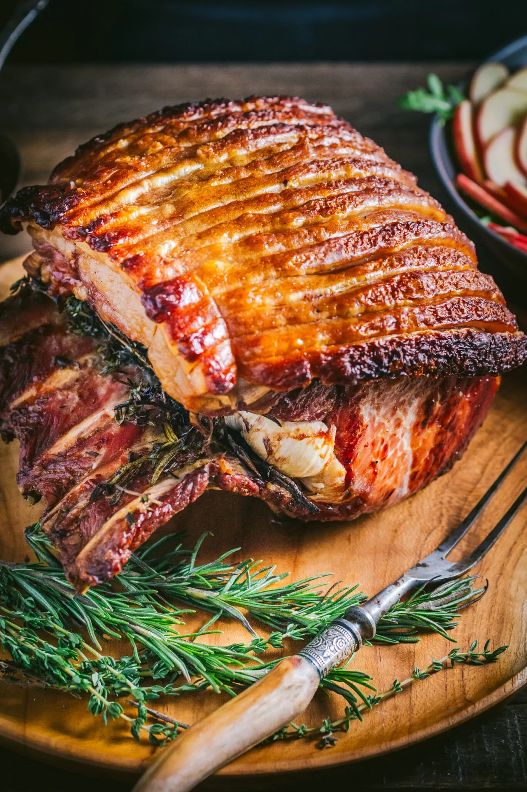

Saehrimnir Roast Pork: A simple but magical recipe for butchering and roasting the cosmic boar Sæhrímnir. The instructions would note that no matter how much the fallen warriors eat at night, the meat regenerates perfectly by the next morning.